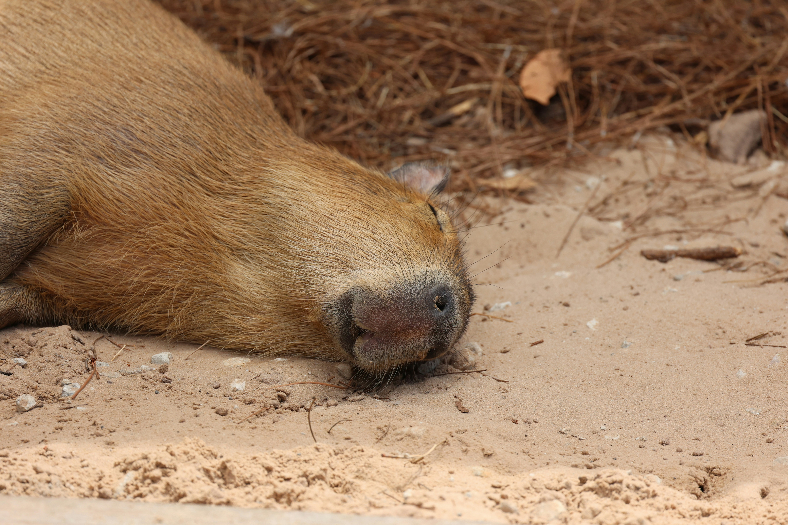

Hello world
Welcome to my web by YCWONY!
What I like ..... 👇
capybara
pubao
sukjoo
Favorite song ~
This is Love Hangover from JENNY
We say it’s over
But I keep f with you
And every time I do I wake up with this love hangover
You got me pouring for two
I swore I’d never do it again
Until you came over
I started lying with you
And every time I do I wake up with this love hangover
ah oh
I swear I'll never do it again

The capybara[a] or greater capybara (Hydrochoerus hydrochaeris) is the largest living rodent,[2] native to South America. It is a member of the genus Hydrochoerus. The only other extant member is the lesser capybara (Hydrochoerus isthmius). Its close relatives include guinea pigs and rock cavies, and it is more distantly related to the agouti, the chinchilla, and the nutria. The capybara inhabits savannas and dense forests, and lives near bodies of water. It is a highly social species and can be found in groups as large as 100 individuals, but usually live in groups of 10–20 individuals. The capybara is hunted for its meat and hide and also for grease from its thick fatty skin.[3]